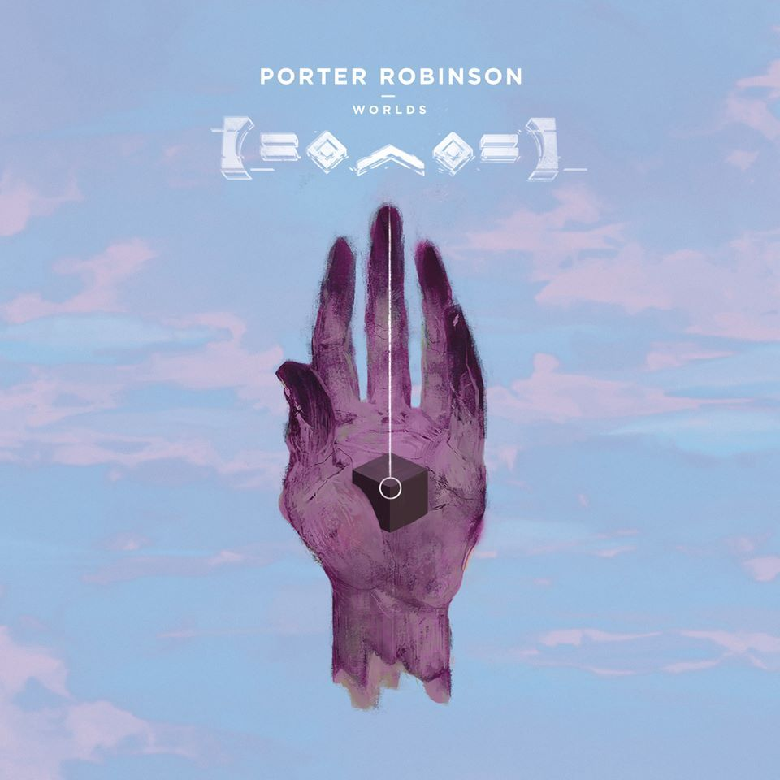

Three Favorite Music Genres
EDM: Progressive House
Progressive House is a style and subgenre of house music. It emerged in the early 1990s, but was approximately developed in the 1980s. The roots of progressive house trace back to the United Kingdom and was popular in raves. The average BPM (beats per minute) of progressive house songs is around 125-130. Progressive house is very popular today with notable artists such as Avicii, Deadmau5, and Zedd.
EDM: Electro House
Electro house is described as a fusion genre of house and electro that is characterized by a prominent bassline and kickdrums. It originates from electro, tech house, synthpop, and electroclash subgenres. Electro house became popular in the early 2000s, specifically with Benny Benassi's track, "Satisfaction" in 2002. Daft Punk, David Guetta, and Porter Robinson are some popular modern electro house artists.
